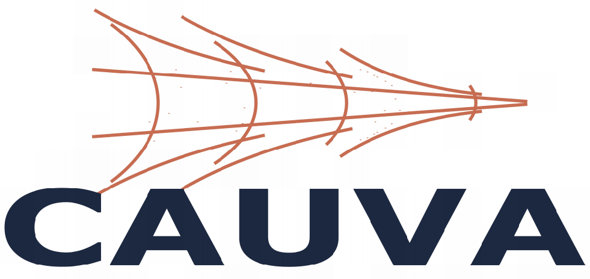
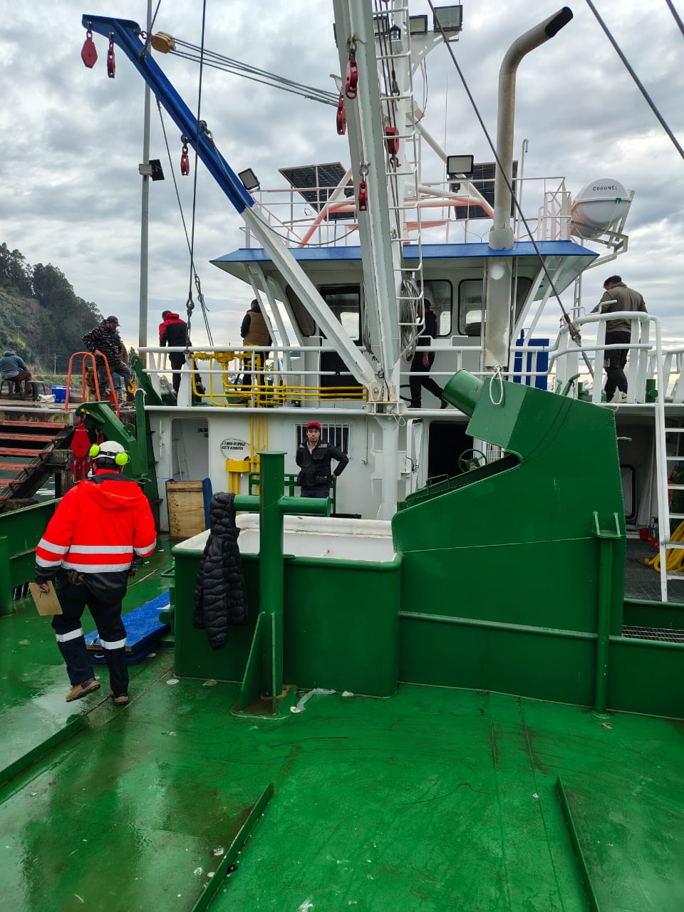
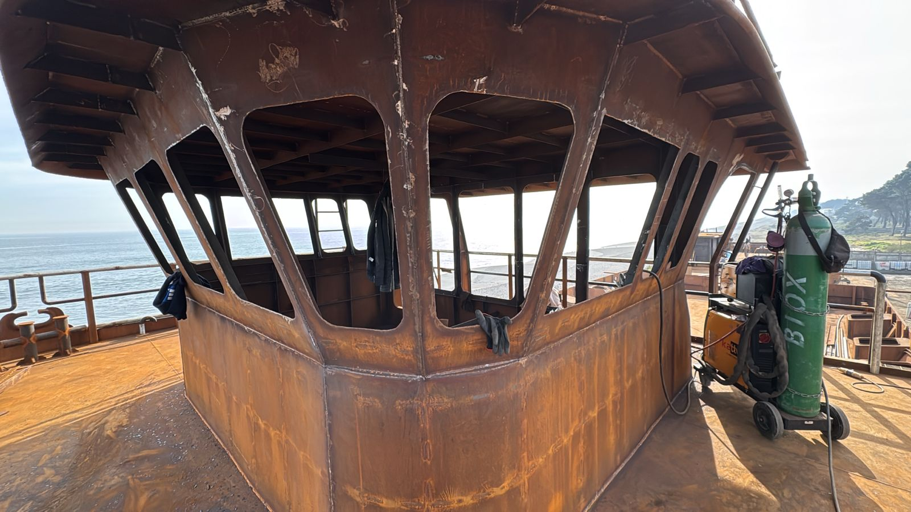
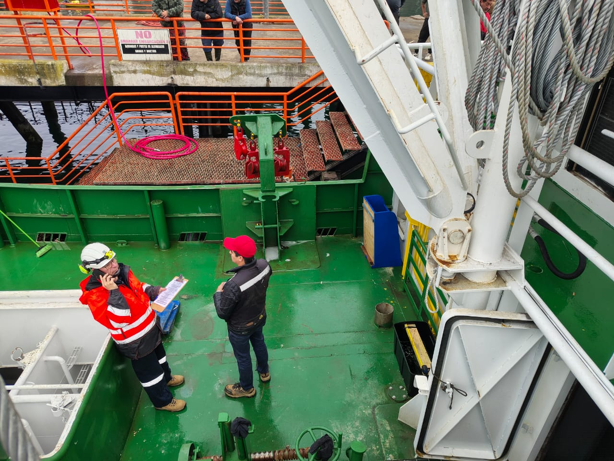

Ingeniería y diseño naval
- Planos reglamentarios y constructivos
- Cálculos estructurales y escantillonado
- Estudios de estabilidad
- Cálculo de arqueo
- Modelado 3D e ingeniería de detalle

Ingeniería aplicada al entorno marítimo
Ingeniería naval, certificación, inspección técnica y apoyo operacional para embarcaciones, artefactos navales y centros de cultivo.
CAUVA
Desarrollamos soluciones integrales para proyectos marítimos, combinando diseño, cálculo, documentación técnica, inspección y apoyo operacional.
Nuestro trabajo acompaña cada proyecto desde la definición conceptual y los planos hasta la construcción, regularización, certificación y ejecución en terreno.

Servicios

Ingeniería, inspección y operación bajo un mismo enfoque.

Diseño naval
Convertimos requerimientos operacionales en soluciones técnicamente desarrolladas, con documentación orientada a fabricación, certificación y puesta en servicio.
Proyectos destacados

Proyecto 01
Desarrollo de ingeniería estructural, planos constructivos y apoyo técnico para una embarcación destinada a operaciones marítimas y logísticas.

Proyecto 02
Ingeniería naval, planos estructurales y documentación técnica para su habilitación operacional.

Proyecto 03
Participación en terreno, análisis de registros ROV y elaboración de informe técnico de obra viva.
En terreno
Acompañamos inspecciones, pruebas, construcción y operaciones para verificar que la solución funcione donde importa: a bordo y en el mar.



Operaciones marítimas
Hablemos de su proyecto
Cuéntenos el requerimiento técnico, la embarcación o la operación que necesita desarrollar.
Juan Carlos Caullán
Representante